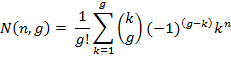

Paper Title :
Clients’ Database Management And Cluster Analysis
Abstract
The goal of any bank is to develop long term profitable relationships with its clients. Therefore, through our study we tried to point out the way in which we can benefit from the advantages of cluster analysis in groups identification that better characterize the potential customers of a financial institution. Starting from a bank’s database of reliable clients using consumer loans, we emphasized the main characteristics of the loan applicant, by applying different hierarchical cluster methods. The study results showed a reduction of costs and time frame implied to create targeted consumer profile and an increase of the respond rate in comparison to standard institution procedure after using cluster analysis.
Authors:
PhD Candidate Hălăucă Alina Ioana
Academy of Economic Studies
Bucharest, Romania
PhD Prof Albu Crişan
Academy of Economic Studies
Bucharest, Romania
Paper Transcript of Paper Titled :
CLIENTS’ DATABASE MANAGEMENT AND CLUSTER ANALYSIS
Clients’ Database Management And Cluster Analysis
PhD Candidate Hălăucă Alina Ioana
Academy of Economic Studies
Bucharest, Romania
PhD Prof Albu Crişan
Academy of Economic Studies
Bucharest, Romania
The goal of any bank is to develop long term profitable relationships with its clients. Therefore, through our study we tried to point out the way in which we can benefit from the advantages of cluster analysis in groups identification that better characterize the potential customers of a financial institution. Starting from a bank’s database of reliable clients using consumer loans, we emphasized the main characteristics of the loan applicant, by applying different hierarchical cluster methods. The study results showed a reduction of costs and time frame implied to create targeted consumer profile and an increase of the respond rate in comparison to standard institution procedure after using cluster analysis.
Keywords - database, clients segmentation, cluster analysis
Introduction
In a dynamic financial environment, where products and services have become similar, one of the most important assets, which must be used in order to gain market share and which is a real competitive advantage, is the client. Any banking institution must be orientated to identification and defining the typology of distinctive buyers groups, to be present in one or more market segments, to pointing out the main products/services’ advantages and their communication. Gaining from the segmentation’s advantages, as a technique of grouping a heterogeneous population into homogenous classes, any company may make more efficient the client management through a precise knowledge. Starting from the interaction with clients, as for the support offered but also for keeping contact with them, software applications have been created, applications which manage information about consumers.
If theoretically, the steps implied by marketing activity for focusing on bank’s relation with clients have been generally established, the linked high costs limit the way of using the mathematical concepts. The standard procedure consists in: a bank works with a market research company for identifying consumers’ needs. The bank establishes aleatory or based on its experience the variables which must be followed by the research company in the segmentation process. Then, the employed firm, based on a questioner, an interview or focus groups, conducts the research, analyzing the results obtained. Based on these evaluations the financial institution determines its marketing, business strategy. But, why not to begin the process of analyzing the consumers’ behavior from the inside data?
Multidimensional data analysis offers various ways and solutions for managing client’s data. Through this is cluster analysis, analysis that may be a support in segmentation process, in order to synthesize and extract information which to best characterize potential clients of a bank. Cluster analysis follows the identification of a common characteristic of analyzed data through grouping multivariate information in classes. The goal is to identify an optimum ranking described by clusters composed from similar observation or objects, but different of each other. The researcher hopes to identify the natural classifications which to be justified by reality.
The current paper will show how we can gain advantage from cluster analysis in order to resume the available data and extract correct information that characterize best the potential bank client groups.
Typology of cluster analysis in clients DATABASE MANAGEMENT
Cluster analysis follows the classification of multivariate data organized in groups, so that we can observe the resemblance and difference between studied cases. The clusters must be characterized by an internal high homogeneity and also by an external (between groups) high heterogeneity. The cluster’s variation means mathematical selected variables representations through which may be compared the resemblance between variables.
Even if the goal of cluster analysis is to group objects, the technique may be used in reducing process of data or in developing certain assumptions: a researcher may deal with a high number of observations that can be significant only if they are classified in groups possible to be managed, under the restriction of a minimum loss of information (for example, if we can understand the behavior of a population by identifying the main groups from that population, than we have reduced the data from the entire population to the profiles of a certain number of groups); a researcher may develop or test certain assumptions (for example, a consumer’s behavior may be observed through the demographical resemblances and differences).
How cluster analysis works:
- Resemblance evaluation: resemblance shows the correspondence between objects based on the characteristics used in analyze. For these, different types of distance may be used.
- Cluster developing: having determined the distances between groups, we may select the closest objects, if we have used an agglomerative hierarchical technique
- Selecting the number of clusters for the final solutions: the target of the cluster analysis is to identify segments through observations combination, under the limitation of introducing a limited heterogeneity. Also, simple structure composed through homogeneous groups must be identified.
Regardless if we speak about agglomerative or crumbling hierarchical clustering techniques or about partitioned algorithms, summing up the literature regarding cluster analysis allows three principles on which most users develop most applications: aggregation, optimization, models based on density functions.
We focused on hierarchical methods as methods oriented to identify groups in a certain database. The number of possibilities of dividing a set of indicators into g clusters is given by the relation ([16]):
 (1)
The relation may be approximate through gn/g!.
So, the hierarchical procedures imply an n-1 series in clustering decisions (when the number of observations is n) which combine the observations in a hierarchical structure or in a dendogram. The main hierarchical methods are agglomerative or dividing. In hierarchical methods each object starts as one cluster and then merges with the most similar cluster till one cluster is left. The divisions’ methods start from one cluster which is divided till one group is composed from one object. Most of the informatics applications use agglomerative techniques. Partitioned procedures are focused on maximizations of distances between groups and on the minimizations of distances inside the groups.
There are different methods for measuring similarity in the clustering process ([3], [4], [7], [13], [15], [16]), but we based our study on centroid and Ward methods:
In the centroid method the similarity between two clusters is the distance between clusters centroids, respectively between the mean values of the observations in one cluster. If a new individual is added to the group, the cluster centroid changed. Distance between clusters w1 and w2 is reflected by the relation:
(11)
where , are medium vectors of the two clusters.
Ward’s method defines the similarity between two clusters as the sum of squares within the clusters summed over all variables. The purpose is to select the combination of clusters that minimizes the within-clusters sum of squares. Mathematically, if w12 is the new cluster obtained through fusion of group w1 with w2, the sum of intra-cluster distances will be:
(2)
where was defined previously,  ,
,  and = + is the number of objects from clusters w1, w2, respectively w12.
and = + is the number of objects from clusters w1, w2, respectively w12.
Ward method will fusion the two clusters which minimize the increase of the errors square sum defined as:
Summering, hierarchical clustering methods are repetitive processes of grouping objects based on a certain cluster algorithm which defines similarity between groups composed by different members.
Hierarchical division methods start from one cluster composed from n individuals which is divided in two groups. At each step, each group is divided in another two subgroups. The result of the algorithm consists in n clusters, which might be shown through a dendogram. The division of one cluster in two may be done based on one variable or on p variables.
Some advantages of hierarchical methods may be pointed out:
- Simplicity – the resulted arborescent structure shows a simple image of all clustering solutions
- Similarity measure – for almost all types of variables distance measure procedures have been developed
- Time spare – obtaining clustering solutions offers the researcher the possibility of analyzing different variants for grouping.
Disadvantages of hierarchical algorithms may be:
- A false image of the problem may be created as different initial combinations may develop artificial results
- Deleting extreme values may create an appropriate solution
- A large database may be difficult to be analyzed through hierarchical methods.
All agglomerative hierarchical methods lead to only one final cluster that contains all subjects; even if there are more sophisticated methods that can select the number of clusters, the researcher is the one that has to decide the solution that describes the problem best.
Using cluster analysis in clients’ database managemebt: development and study results
In order to point out the need of usage of analysis models for cluster analysis in the managing process of consumers database, we have analyzed the behavior, need of loans, of the bank’s customers. Starting from a database of clients that have requested consumer loans through the specified method of analyze we have followed the main characteristics of the loan consumer; the whole process is directed on simplifying variables that describe the loan client’s profile and identification of segments, considering that a narrower client identification can have its benefits as well as regarding business opportunity, that would lead in selling a credit card, and as for reducing costs.
For a number of around 400 clients (good payers) that already have a personal needs loan, with or without warranties, we have selected a number of eight variables in order to describe their behavior: sex, age (Varsta, in years), children number (Numar Copii), income as appliance from (Venit cerere, in RON), education (Educatie), loans from other banks (Crd alte Banci), loan balance (Sold Credite, in RON), and Marital status (Situatia Familiala). We underline that the objective of this study is to identify the clients segment from our database, clients interested in buying a credit card.
Each client is identified through an unique ID. The information regarding the client is extracted for the form filled in when requesting a loan.
In order to have a comprehensive approach we made the following adjustments:
- split the levels of education in two: “1” represents university and post university studies, “2” represents high school and other forms of study
- in order to have numbers also for countries I have made following adjustments (I have used the 8 development regions of Romania): 1 – North-East, 2 –West, 3 –North-West, 4 – Middle, 5 – South-East, 6 – South-Muntenia, 7 – Bucharest-Ilfov, 8 – South-West Oltenia
- the variable “marital status”: can take “1” for “Married”, “2” for “not married” and “3” for “widow”.
Through our study we have tried to show how cluster analysis helps selecting limited groups in order to develop a marketing strategy.
For a proper example of cluster analysis benefits we selected bank’s clients who live in South-East region, in order to point out some resemblance between them. Using as support SAS (Statistical Analysis System), we applied centroid method, as a hierarchical algorithm, selecting as variables number of children (as a characteristic of family situation) and loans balance (as a variable describing financial situation); results obtained consist in the following dendrogram:
Figure1: Dendrogram according to centroid method
Looking at the way that clusters are being created, we may reduce the number of clients to be addressed to in a marketing campaign for selling a new product to 39, in south-East region, from 42.
On the same database, we applied Ward method, method that showed similar results with the ones obtained previous:
Figure2: Dendrogram according to Ward method
Applying the Ward method on the other regions we may reduce the database as follows: for North-East region to 40 potential clients, to West region to 47, to North-West regions to 38, on Center to 55, in South-Muntenia to 70, and for South-West Oltenia to 24. The high homogeneity from Bucharest Ilfov does not allow reducing the clients’ number.
In conclusion, we may develop a marketing approach addressed to 314 clients, smaller than the initial database, clients identified by using cluster analysis based on two variables.
In order to underline the importance of using multidimensional data analysis in daily activity of any company, we tried to manage databases having as support another business intelligence environment, Microsoft Analysis Services - Microsoft Visual Studio. On Microsoft Visual Studio SQL 2008 R2 application, based on the database developed, we applied cluster algorithm and, as per Microsoft Cluster Viewer the below diagram was obtained:
Figure3: Client groups diagram
The stronger the lines between the clusters are, the intensive is the relationship between the groups. A weaker relationship means that the clusters don’t have similarities between them.
Also, Cluster Discrimination allows the comparison between two clusters. In this way we may see the main differences between clusters and the attributes that characterize the each cluster, ordered by their importance:
Figure4: Discriminant analysis for two clusters
The way the line is being set shows the cluster where it influences most.
This methods allows us to go into details, for each clusters being available a full list with attributes that characterizes each group, list that makes the difference between each groups and the rest of the data. So, the impact of each variable in the group may be noticed in the example below, for one cluster:
Figure5: Example of variables impact in a cluster
Microsoft Analysis Services provides all the information required for selecting a lower number of cluster, of reducing clients’ database dimension.
The use of information about customers, only when a certain product is requested, without being included in a centralized system able to offer the opportunity for each division to access and capitalize data, makes difficult to develop an integrated image of clients and of their profile. A proper knowledge of client’s needs and expectations is the base for a successful communication. Marketing in nowadays involves using large databases and complex data about customers.
In order to show the impact of conducting a direct marketing action on a reduced clients database, the analyzed bank contacted in parallel by a written letter all the consumers from the initial database and all from the reduced one. The results are showed below:
No of clients |
Rate of respond (clients no responded/total clients no) |
408 |
12,25% |
315 |
18,50% |
Tabel1: DM statistics
Summing up, an increase in the respond rate of higher of 51%, according to bank’s reports, can be observed after applying a direct marketing strategy on the clustered database. We must underline that our example is based on small database, but, in practice, large clients’ databases are used, databases linked to higher costs.
Summary and conclusions
Cluster analysis may be used in marketing in developing and describing different potential clients segments. Developed study was based on applying hierarchical and nonhierarchical algorithms on analyzed database. Conclusions obtained consist in:
- both centroid method and ward method conducted to similar results
- hierarchical clustering methods reduced the database with about 23% comparing to initial situation
- choosing one of the two methods depends on researchers’ option, on easiness of applying them
- as for business impact, the positive effects of cluster analysis must be easily proved.
Even if the high level of database’s homogeneity may be a minus of our study, applying cluster analysis determined the reduction of potential clients. Based on dendrograms on each region, the bank may conduct the analysis to grouping and selecting clients that are best suitable to cost and time restrictions.
References
[1] Prasad S., “A Review on Software Architecture”, International Journal of Trends in Economics Management and Technology (IJTEMT), Vol. II, Issue. IV, August 2013, ISSN: 2321-5518, pp 72-74.
[2] Cunningham K. M., Ogilvie J. C. (1972), „Evaluation of hierarchical grouping techniques: a preliminary study”, Computer Journal, vol 15, pag 209 – 213, ISSN 1460-2067
[3] Everitt Brian S., Landau S., Leese M., Stahl D. (2011), „Cluster Analysis”, fifth edition, John Wiley & Sons ltd, ISBN 978-0-470-74991-3
[4] Everitt Brian S., Dunn Graham (2001), “Applied Multivariate Data Analysis”, second edition, John Wiley & Sons ltd, ISBN 978-0-4707-1117-0
[5] Gower J. C (1967)., “A Comparasion of Some Methods of Cluster Analysis”, Biometrics, vol. 23, pag 623 – 637, ISSN 1541-0402
[6] Gordon A. D. (1996), “Hierarchical classification. In Clustering and Classification” (P. Arable, L.J.Hubert & G de Soete, Eds), World Scientific, Singapore, pag 65 – 121, ISSN 1793-1207
[7] Prasad S., “Image Processing on Scanned Images”, International Journal of Trends in Economics Management and Technology (IJTEMT), Vol. II, Issue. V, Oct 2013, ISSN: 2321-5518, pp 46-50.
[8] Hartigan J. (1975), “Clustering Algorithms”, John Wiley & Sons ltd, 2011, New York, ISBN 0317094017, 9780317094015
[9] Kotler Ph. (2002), „Managementul marketingului”, editia a III a, editura Teora, ISBN 973-20-0579-3
[10] Lance, G.N., and W.T. Williams (1996), „A General Theory of Classificatory Sorting Strategies.1.I. Hierarchical Systems”, CSIRO Computing Research Section, pag 373-380, ISSN 1460-2067
[11] Linoff G. S., Berry M. J. (1997), „Data Mining Techniques: For Marketing, Sales, and Customer Relationship Management”, John Wiley & Sons ltd, ISBN – 0-461-17980-9
[12] Punj G., Stewart D. W. (1983), „Cluster Analysis in Marketing Research: Review and Suggestions for Applications”, Journal for Marketing Research, vol 20, pag 134 – 148, ISSN 1547-7193
[13] Rencher Alvin C. (2002), „Methods of Multivariate Analysis”, second edition, John Wiley & Sons ltd, ISBN 0-471-41889-7
[14] Romesburg H. C. (1984), “Cluster Analysis for Researchers”, Lifetime Learning Pub, ISBN 0534032486
[15] Ruxanda Gh. (2009), „Analiza multidimensionala a datelor”, suport curs Scoala Doctorala, Academia de Studii Economice Bucuresti
[16] Simar Léopold, Härdle Wolfgang (2003), “Applied Multivariate Statistical Analysis”, Springer, ISBN 3540722432
[17] Spircu L., Calciuc M., Spircu T. (1994), “Analiza datelor de marketing”, ed All, Bucureşti, ISBN 978-9156-82-7
[18] Ward J. (1963), „Hierarchical Grouping to Optimize an Objective Function”, Journal of the American Statistical Association, vol 58, pag 236 – 244, ISSN 1537-274X
[19] Prasad S., “Software Layering, Style and Evaluation”, International Journal of Trends in Economics Management and Technology (IJTEMT), Vol. II, Issue. VI, Dec 2013, ISSN: 2321-5518, pp 10-13.
[20] Hair Joseph F Jr, Black William C, Babin Barry J, Anderson Rolph E (2009), „Multivariate Data Analysis”, seventh edition, ed Pearson College Div, ISBN 9780138132637
[21] Agresti A. (2002), „Categorial Data Analysis”, Second Edition, Wiley & Sons ltd, ISBN 0-471-36093-7
North-East: Iași, Botoșani, Neamt, Suceava, Bacău, Vaslui; Vest: Arad, Carș-Severin, Hunedoara, Timiș; Nord-West: Bihor, Bistrița-Năsăud, Cluj, Maramureș, Satu-Mare, Sălaj; Middle: Alba, Sibiu, Mureș, Harghita, Covasna Brașov, South-East: Vrancea, Galați, Brăila,Tulcea, Buzău, Constanța, South-Muntenia: Prahova, Dâmbovița, Argeș, Ialomița, Călărași, Giurgiu, Teleorman; Bicharest-Ilfov: București, Ilfov; South-West Oltenia: Mehedinți, Gorj, Vâlcea, Olt, Dolj